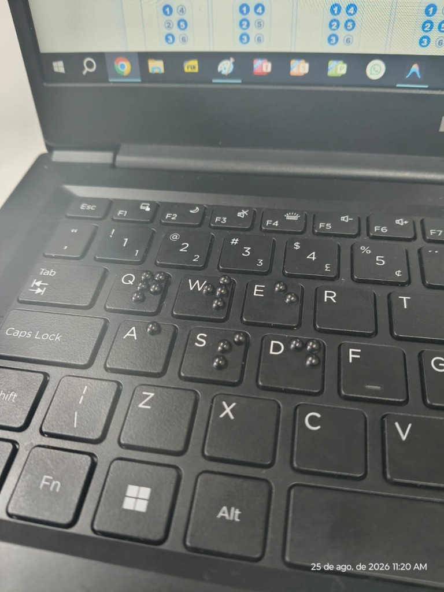
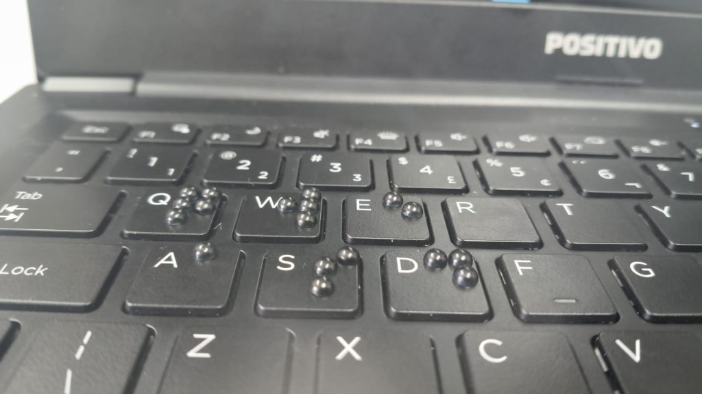

Plataforma de jogos educativos acessíveis para alunos alfabetizandos e professores de AEE (Atendimento Educacional Especializado).
📖 Tabela de Referência Braille Completa
♿ Ajuda de Acessibilidade & Atalhos
O site EduBraille é 100% compatível com o teclado físico do notebook, leitores de tela (NVDA, JAWS, VoiceOver) e linhas braille USB/Bluetooth.
⌨️ Atalhos de Teclado Rápidos:
Teclado Físico do Notebook: Controle primário direto nos jogos (Letras A-Z, Números 0-9, Setas e Enter funcionam imediatamente).
Alt + P: Ativar / Desativar o Modo Professor (Tinta + Braille lado a lado).
Alt + T: Alternar Tema de Cores e Alto Contraste.
Alt + S: Ativar / Desativar Leitura por Voz (TTS).
Alt + F: Voltar rapidamente ao Início / Jogos.
Alt + H: Abrir esta janela de ajuda.
Esc: Fechar janelas flutuantes ou retornar aos jogos.
💡 Acessibilidade Tátil sem Linha Braille (Adaptação de Teclado)
Para alunos ou escolas que não possuem linha braille USB/Bluetooth, é simples deixar o teclado tradicional de computador 100% tátil e acessível!
🛠️ Técnica Recomendada: Utilização de colagem de meia pérola de 04 milímetros (04mm) para a construção de celas Braille (pontos 1 a 6) nas teclas do teclado tradicional.

Foto 1: Teclas adaptadas com meias pérolas de 4mm (vista aproximada)

Foto 2: Teclado de notebook completo com celas Braille táteis